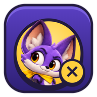

Политика конфиденциальности
Privacy Policy
«Тайный список: Неоновая крыша» / “Secret List: Neon Rooftop” · Действует с 12 ноября 2026 г. / Effective November 12, 2026
Коротко
- В игре нет регистрации, аккаунтов, рекламы, встроенных покупок, аналитики и трекеров.
- Настройки и прогресс хранятся только на вашем устройстве.
- Данные уходят в интернет, только когда вы сами выбираете «Играть с друзьями»: тогда для поиска комнаты используется сервис Microsoft PlayFab, а игроки в комнате соединяются напрямую друг с другом.
1. Кто мы
Эта политика описывает, как разработчик игры «Тайный список: Неоновая крыша» (далее — «мы») обращается с данными игроков в версии для браузера и Microsoft Store (PWA) и в версии для Steam. По любым вопросам пишите: lootroomgame@gmail.com.
2. Что хранится на вашем устройстве
Игра сохраняет в памяти браузера (localStorage) или приложения на вашем компьютере:
- настройки: язык, громкость, качество графики, выбранного героя, длительность матча;
- имя, которое вы сами ввели для сетевой игры (необязательно, до 18 символов);
- счётчики для достижений (сколько матчей сыграно, сколько заказов выполнено);
- случайный анонимный идентификатор для сетевой игры (см. раздел 3), если вы хоть раз играли по сети;
- копию файлов игры, чтобы она запускалась без интернета (кэш service worker).
Эти данные никуда не отправляются и не доступны нам. Удалить их можно, удалив приложение или очистив данные сайта в настройках браузера.
3. Сетевая игра с друзьями (браузер и Microsoft Store)
3.1. Microsoft PlayFab — поиск комнаты по коду
Чтобы друзья нашли вашу комнату по короткому коду, игра использует сервис Microsoft Azure PlayFab (Microsoft Corporation). При создании комнаты или входе в неё передаются:
- случайный анонимный идентификатор, созданный на вашем устройстве. Он не связан с вашим именем, e-mail или учётной записью Microsoft. По нему PlayFab создаёт анонимную учётную запись игрока;
- код комнаты и технические данные для прямого соединения: сетевые адреса вашего устройства (включая IP-адрес) и одноразовые ключи шифрования соединения;
- как и любой интернет-сервис, PlayFab получает IP-адрес вашего устройства при обращении к нему.
Мы не передаём в PlayFab ваше имя и не используем PlayFab для рекламы или аналитики. Данные комнаты удаляются, когда комната закрывается. Анонимная учётная запись остаётся в PlayFab, пока мы её не удалим; по запросу на lootroomgame@gmail.com мы удалим данные, связанные с вашим устройством. Как Microsoft обрабатывает данные: Заявление о конфиденциальности Microsoft.
3.2. Прямое соединение между игроками (WebRTC)
Сам матч идёт напрямую между устройствами игроков в комнате, без наших серверов. Поэтому другие игроки в вашей комнате технически могут увидеть IP-адрес вашего устройства, как в любой игре с прямым подключением. Между игроками передаются: имя, которое вы ввели, выбранный герой и игровые действия. После окончания игры эти данные нигде не сохраняются.
Чтобы устройства нашли друг друга через интернет, игра обращается к общедоступным STUN-серверам Cloudflare и Google. Они видят только ваш IP-адрес и сообщают устройству его внешний адрес; игровые данные через них не проходят.
3.3. Общение
В игре нет чата, голосовой связи и обмена файлами. Другие игроки видят только введённое вами имя.
4. Версия для Steam
В версии для Steam лобби, приглашения друзей, сетевое соединение, достижения и статистику обеспечивает Valve через Steam. Игра получает от Steam ваше имя в Steam и язык клиента и отправляет в Steam достижения и игровую статистику (число матчей, побед, заказов). Обработку данных в Steam регулирует Соглашение о конфиденциальности Valve. Сетевая игра по локальной сети или IP-адресу идёт напрямую между компьютерами игроков.
5. Хостинг
Веб-версия игры размещена на GitHub Pages (GitHub, Inc.). При загрузке страницы GitHub может записывать IP-адрес в технических журналах для безопасности: Заявление о конфиденциальности GitHub.
6. Дети
Игра подходит для широкой аудитории. Мы сознательно не собираем персональные данные детей: регистрации нет, а сетевая игра работает без личных данных. Если вы считаете, что ребёнок передал нам персональные данные, напишите нам — мы их удалим.
7. Ваши права
Вы можете в любой момент удалить данные на устройстве (см. раздел 2) и попросить нас удалить или предоставить данные, связанные с вашим устройством в PlayFab, написав на lootroomgame@gmail.com. Мы ответим в течение 30 дней. Мы не продаём и не передаём данные третьим лицам, кроме сервисов, перечисленных выше, которые нужны для работы игры.
8. Изменения
Если мы изменим эту политику, новая версия появится на этой странице с новой датой вступления в силу.
In short
- The game has no sign-up, accounts, ads, in-app purchases, analytics or trackers.
- Your settings and progress stay on your device.
- Data goes online only when you choose “Play with friends”: Microsoft PlayFab is used to find the room, and the players in a room connect directly to each other.
1. Who we are
This policy explains how the developer of “Secret List: Neon Rooftop” (“we”) handles player data in the browser and Microsoft Store (PWA) version and in the Steam version. Questions: lootroomgame@gmail.com.
2. What is stored on your device
The game keeps the following in your browser’s or app’s local storage on your computer:
- settings: language, volume, graphics quality, chosen hero, match length;
- the name you type for online play (optional, up to 18 characters);
- counters for achievements (matches played, contracts completed);
- a random anonymous identifier for online play (see section 3), once you have played online;
- a copy of the game files so it starts without an internet connection (service worker cache).
This data is not sent anywhere and we cannot access it. You can delete it by uninstalling the app or clearing the site data in your browser settings.
3. Playing online with friends (browser and Microsoft Store)
3.1. Microsoft PlayFab — finding a room by its code
So that friends can find your room by a short code, the game uses Microsoft Azure PlayFab (Microsoft Corporation). When you create or join a room, the following is sent:
- a random anonymous identifier created on your device. It is not linked to your name, e-mail or Microsoft account; PlayFab uses it to create an anonymous player account;
- the room code and the technical data needed for a direct connection: your device’s network addresses (including its IP address) and one-time encryption keys for the connection;
- like any internet service, PlayFab receives your device’s IP address when the game contacts it.
We do not send your name to PlayFab and do not use PlayFab for advertising or analytics. Room data is deleted when the room closes. The anonymous player account stays in PlayFab until we delete it; write to lootroomgame@gmail.com and we will delete the data linked to your device. How Microsoft processes data: Microsoft Privacy Statement.
3.2. Direct connection between players (WebRTC)
The match itself runs directly between the players’ devices in the room, without our servers. Other players in your room can therefore technically see your device’s IP address, as in any game with direct connections. Players exchange the name you entered, your chosen hero and your in-game actions. Nothing is stored after the game ends.
To let devices find each other over the internet, the game contacts the public STUN servers of Cloudflare and Google. They see only your IP address and tell your device its public address; no game data passes through them.
3.3. Communication
There is no chat, voice or file sharing. Other players only see the name you entered.
4. Steam version
In the Steam version, lobbies, friend invites, networking, achievements and stats are provided by Valve through Steam. The game reads your Steam name and client language and sends achievements and game stats (matches, wins, contracts) to Steam. Steam’s data handling is governed by the Valve Privacy Policy. Playing over a local network or by IP address connects the players’ computers directly.
5. Hosting
The web version is hosted on GitHub Pages (GitHub, Inc.). When the page loads, GitHub may record IP addresses in technical logs for security: GitHub General Privacy Statement.
6. Children
The game is suitable for a broad audience. We do not knowingly collect children’s personal data: there is no sign-up, and online play works without personal data. If you believe a child has given us personal data, contact us and we will delete it.
7. Your rights
You can delete the data on your device at any time (see section 2) and ask us to delete, or give you, the data linked to your device in PlayFab by writing to lootroomgame@gmail.com. We reply within 30 days. We do not sell data or share it with anyone except the services listed above that the game needs to work.
8. Changes
If we change this policy, the new version will appear on this page with a new effective date.